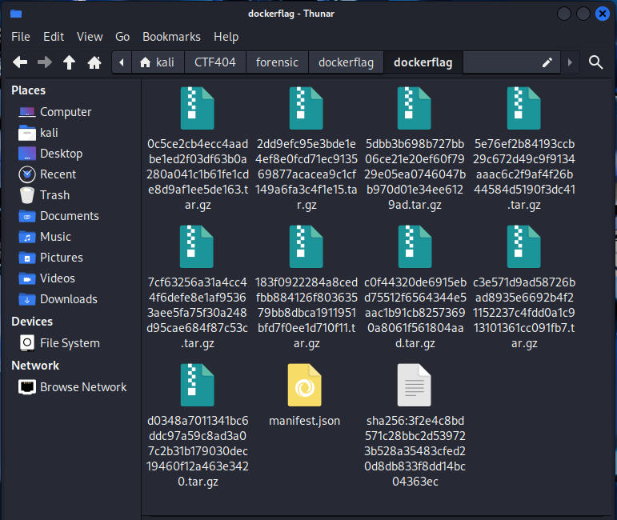
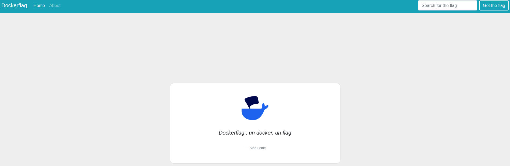
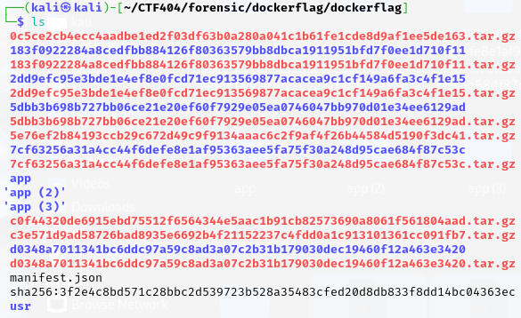
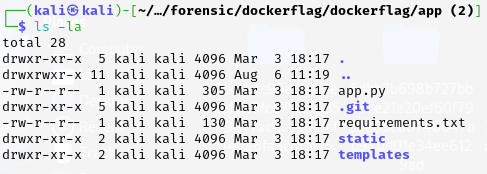
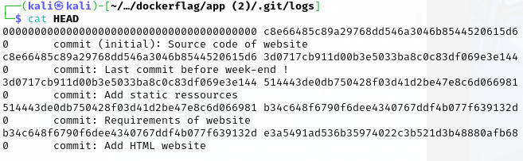
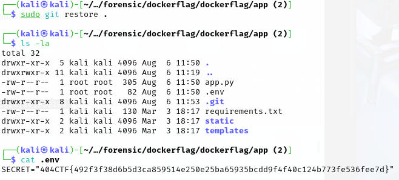

404CTF2025 - Docker Flag
In the Forensic category of the 404CTF, a challenge called “Docker Flag”.
Description :
French : “En vous baladant sur le système informatique du vaisseau, vous tombez sur un vieux projet réalisé il y a bien longtemps, dans une galaxie lointaine, très lointaine. Le projet avait été arrêté assez rapidement et supprimé de votre Gitlab interne, mais peut-être que l’image Docker du site web que vous avez en votre possession a encore quelques secrets bien gardé”.
English : “As you wander around the ship’s computer system, you come across an old project carried out a long time ago, in a galaxy far, far away. The project had been stopped fairly quickly and deleted from your internal Gitlab, but perhaps the Docker image of the website you have in your possession still has some well-kept secrets.”
dockerflag1/ Discovery
We know we’re going to have to work with Docker. Let’s take a look at the “Dockerflag.tar” file we’ve been given.
Contents:
These different files correspond to the layers of a docker image.
We also know that you can reconstruct a docker image using a tar file.
sudo docker load < dockerflag.tar
Loaded image: unset-repo/unset-image-name:latestNow that we have the docker image (unset-repo/unset-image-name:latest), we can launch a container.
sudo docker run unset-repo/unset-image-name:latest
* Serving Flask app 'app'
* Debug mode: off
WARNING: This is a development server. Do not use it in a production deployment. Use a production WSGI server instead.
* Running on all addresses (0.0.0.0)
* Running on http://127.0.0.1:5000
* Running on http://172.17.0.2:5000It’s a web server. When you visit the site, this is what you see:
Unfortunately, there’s not much of interest to be gleaned from it.
2/ Dive
In forensics, there’s a useful tool for analyzing docker images: “dive”.
https://github.com/wagoodman/dive
It allows you to explore every layer of a docker image and provide some very interesting details.
sudo dive unset-repo/unset-image-name:latest- In the “Layers” section, you can see all the image layers.
- In the “Layers Details” section, you can see the details of a layer, the interesting part being “Command”.
- You can also view the contents (file system) of each layer in “Current Layer Contents”.
To understand how docker layers work here is an article :
https://docs.docker.com/get-started/docker-concepts/building-images/understanding-image-layers/
The layers we’re interested in here are “COPY git_repos/ .” and “RUN rm -rf .git”.
We would like to understand why the “.git” folder was deleted and recover its contents. The dockerflag.tar file contains all the layers. So we’re going to use “find” to find out where this folder can be found after all the layers have been extracted.
find ~/CTF404/forensic/dockerflag/dockerflag/ -name ".git"
/home/kali/CTF404/forensic/dockerflag/dockerflag/app (2)/.gitWe move to this location and perform an “ls -la”.
3/ Back to the past
We display the contents of “app.py” (the web server’s python code).
cat app.py
import os
from flask import Flask, render_template
from dotenv import load_dotenv
load_dotenv()
SECRET_KEY = os.getenv("SECRET", default="WHERE IS ZE DOTENV ?")
app = Flask(__name__)
@app.route('/')
def index():
return render_template("index.html")
app.run(debug=False, host="0.0.0.0", port=5000)We realize that there’s a “.env” file containing sensitive elements, but it’s not present in the folder.
We now turn to the log file (HEAD) in the “.git” folder.
A total of 5 commits were made to the application repository. I assume that in one of these commits the “.env” file was present.
If you look in the git command man, you’ll find a command called “restore”, which allows you to undo unvalidated changes in the working directory of a Git repository. Just what we need.
Initialize git in the directory where the .git file is located.
git initWe’ll now need to go into the commits that have been made with the “git checkout” command followed by its id (shown in the image above).
sudo git checkout 3d0717cb911d00b3e5033ba8c0c83df069e3e144
Note: switching to '3d0717cb911d00b3e5033ba8c0c83df069e3e144'.Once set, you can use the command “git restore” followed by a “.” (the dot indicates that the command applies to all files and sub-directories in the current directory).
sudo git restore .Repeat these 2 actions until you find the “.env” file:
FLAG : 404CTF{492f3f38d6b5d3ca859514e250e25ba65935bcdd9f4f40c124b773fe536fee7d}